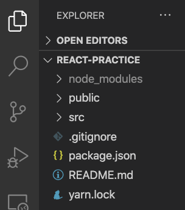
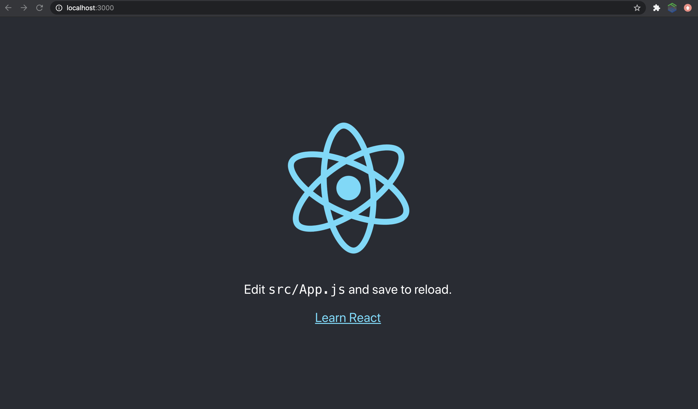

ハンズオンの流れ
- はじめに（ハンズオンの流れ）
- 第１回で作ったアプリの確認
- Lighthouseの紹介
- PWAの作成
- PWAの確認
- PWA有効化
- React開発
- SPA開発
- デプロイとチャレンジ課題
なお、本ハンズオンはこちらの事前準備を完了していることが前提になります。
node -v
Macの方
sudo n 10.19.0
Winの方
nodist 10.19.0
残念ながら上のコマンドを実行してもバージョンが変わらない方、そもそも環境構築を完了していない方は、今回は追いつくことは難しいと判断されるため、今回は聴講スタイルでご参加ください。
それでは進めていきましょう。
Windowsの方が初回のみパワーシェルで実行するコマンド１つ
npm install -g npx
WindowsもMacもLinuxも全ての方が実行するコマンド３つホームディレクトリに移動
cd ~
アプリ雛形作成コマンドのインストール
npm install create-react-app
React雛形の作成
npx create-react-app react-app

開けたら、編集を始める前にReactアプリの中身について確認しておきます。

雛形アプリの中身について
以下、簡単に説明します。
名前 | 説明 |
node_modules | このアプリが利用しているライブラリが配置される |
public | 静的サイトを公開したいときにファイルを配置する |
src | このアプリを開発するときに書くコードやプログラムを配置する |
.gitignore | リモートリポジトリにプッシュしないファイルを書く |
package.json | このアプリのライブラリや各種情報を書く |
README.md | このディレクトリのアプリの説明などを書く |
yarn.lock | このアプリの利用ライブラリの依存関係が書かれている |
現段階で完璧に理解できている必要はありません。重要なのはsrcディレクトリの中に自分で開発するコードが増えていくというイメージを持つことです。ざっと把握できたら次に進みましょう。
ローカルサーバーの起動
npm start
起動に成功すると、ブラウザで以下のようなデフォルトの雛形アプリを確認することができます。

以下のボタンをクリックしてダウンロードして展開した後にそのフォルダのディレクトリでその下のコマンドを実行してください。
ライブラリの一括インストール
npm install
ローカルサーバーの起動
npm start
chromeブラウザを利用している人は拡張機能もあります。
cd ~
npx create-react-app react-practice-pwa --template cra-template-pwa
アプリ作成コマンドはテンプレートを指定して実行することも可能なのでReactでテンプレートを指定してアプリを作成する方法はこのようにすれば良いということを覚えておきましょう。
これでPWA開発の下ごしらえが終わったので、メイン部分の実装をスタートします！次へ進みましょう。
- service-worker.js
- serviceWorkerRegistration.js
- manifest.json
次に進みましょう！
完成後のindex.js
import React from 'react';
import ReactDOM from 'react-dom';
import './index.css';
import App from './App';
import * as serviceWorkerRegistration from './serviceWorkerRegistration';
import reportWebVitals from './reportWebVitals';
ReactDOM.render(
<React.StrictMode>
<App />
</React.StrictMode>,
document.getElementById('root')
);
serviceWorkerRegistration.register();
reportWebVitals();
以下のようにサービスワーカーを読み込んで、呼び出して利用していますね。
index.jsより抜粋
import * as serviceWorkerRegistration from './serviceWorkerRegistration';
serviceWorkerRegistration.register();
エッセンスとしては、reactでPWAを有効化する場合は、このようにテンプレートで作成したPWAのサービスワーカーを呼び出している部分を「unregister()」から「register()」に変更することを知っておけば手軽にPWAとして公開することが可能となっています。
どのように変更したのかを確認できたら、次に進みましょう。
- src/pagesディレクトリ作成
- src/pages/Top.jsファイル作成
- src/pages/About.jsファイル作成
- react-router-domライブラリ追加
- src/routes.jsの作成
- src/App.jsの編集
- src/index.jsの編集
- public/_redirectsファイル作成
npm run-script build
このbuildコマンドを実行するとbuildディレクトリが作成されます。
buildディレクトリとは、本番環境で公開するために書き出されたウェブアプリ（ウェブサイト）のディレクトリのことです。

完成おめでとうございます！

作成したサイトが表示されましたね！お疲れ様でした！
早く終わった人は課題にも挑戦してみましょう！
Doneを押してからChallengeをクリックして「react-pwa-challenge」と入力すると課題に取り組むことができます。
以下のボタンをクリックしても今日の課題を開けます。
◆ ◇ ◆ ◇ ◆ ◇ ◆ ◇ ◆ ◇ ◆ ◇ ◆ ◇ ◆ ◇ ◆ ◇
完成できなかった人のための共有
ダウンロードして展開した後に以下のコマンドを実行してください。
本日のハンズオンで作業した内容が反映されたアプリを起動することができます。
ライブラリのインストール
npm install
ローカルサーバーの起動
npm start
作成したアプリのビルド
npm run-script build